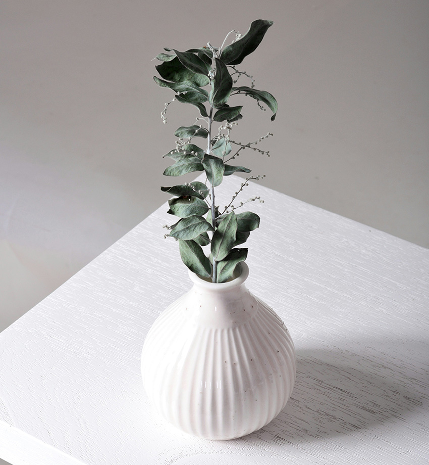
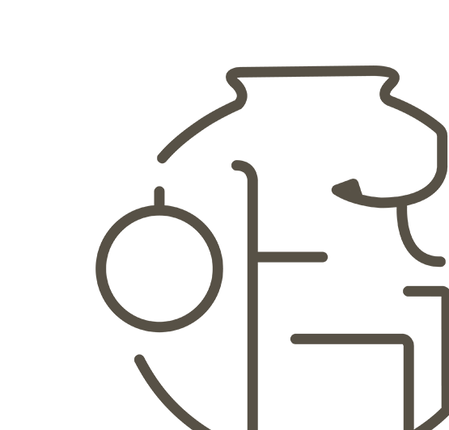
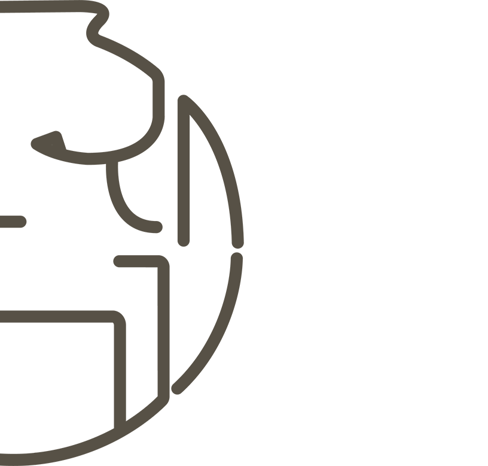

TRADITION

ENVIRONMENT

ART




“친환경성과 지속 가능성”
도자기 제품은 천연 소재인 흙으로 제작되며, 제작 과정에서 유해 물질 배출이 적고폐기 시 탄소 배출이 거의 없어 환경친화적인 대안으로 평가 받습니다.
예를 들어, 한국환경산업기술원이 개발한 도자기 텀블러는
플라스틱 대체품으로 주목받고 있으며,
발달장애인 고용기업과 연계해 사회적 가치를 더하고 있습니다.

“한국 전통과
문화의 재발견”
도자기는 단순히 제품을 넘어 한국 전통 문화를
대표하는 매체로서도 인식되고 있습니다.
작가들이 전통적이면서도 현대적인 방식으로
이를 해석해 창작 활동을 이어가고 있으며,
한국 미술과 문화적 아이덴티티를 탐구하는
중요한 과정으로 받아들여집니다.
대표하는 매체로서도 인식되고 있습니다.
작가들이 전통적이면서도 현대적인 방식으로
이를 해석해 창작 활동을 이어가고 있으며,
한국 미술과 문화적 아이덴티티를 탐구하는
중요한 과정으로 받아들여집니다.

“업사이클링과 예술적 재해석”
최근에는 깨진 도자기 파편 등을 활용한 업사이클링 작품들이 소개되고 있습니다.예를 들어, 이천도자기축제에서는 도자기 파편으로 만든 램프와 같은 작품이
전시되어 ‘불완전함의 아름다움’과 같은 철학적 메시지를 전달하며
관객들의 호응을 얻고 있습니다. 있습니다.